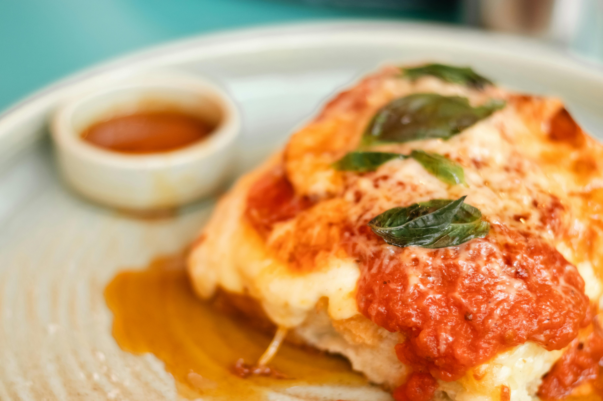

Home
Lasagna

Description
A rich and creamy whole-wheat pasta dish filled layer by layer with refreshingly
fresh onions and garlic, lathered in a succulent sauce and topped with imported,
premium quality mozzarella.
Ingredients
- 1 medium yellow onio
- 1 tablespoon olive oil
- 1 pound lean ground beef
- 1/2 teaspoon kosher salt
- 1/4 teaspoon freshly ground black pepper
- 1 (24 to 25-ounce) jar marinara sauce (3 cups), such as Rao's or Newman's Own
- 12 ounces low-moisture mozzarella cheese, shredded (about 3 cups), divided
- 15 dry lasagna noodles (not no-boil, about 2/3 of a 1-pound box), divided
- 15 to 16 ounces whole-milk ricotta cheese (about 2 cups), divided
Steps
- Heat the oven to 400ºF.
- Brown the beef and onion.
- Prepare the baking dish and assemble the meat sauce.
- Begin layering the lasagna.
- Continue layering the lasagna.
- Bake the lasagna for 1 hour.
- Sprinkle with the remaining mozzarella and finish baking.
- Cool the lasagna for 15 minutes.